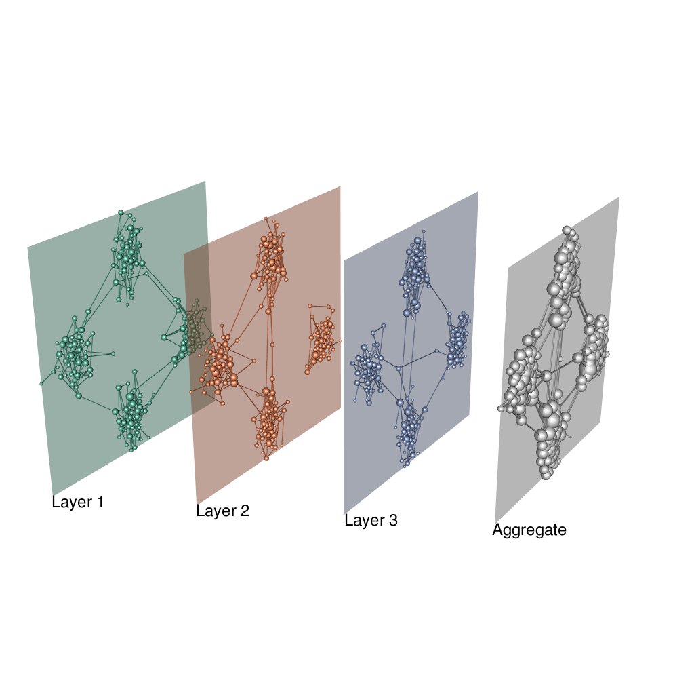
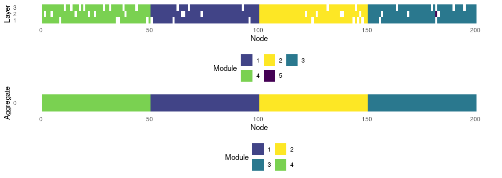
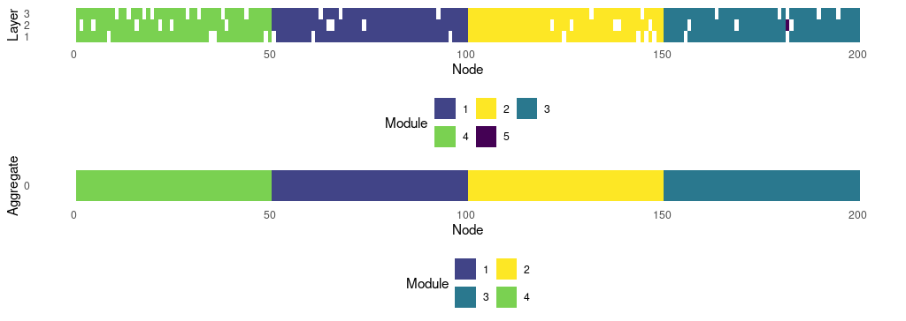
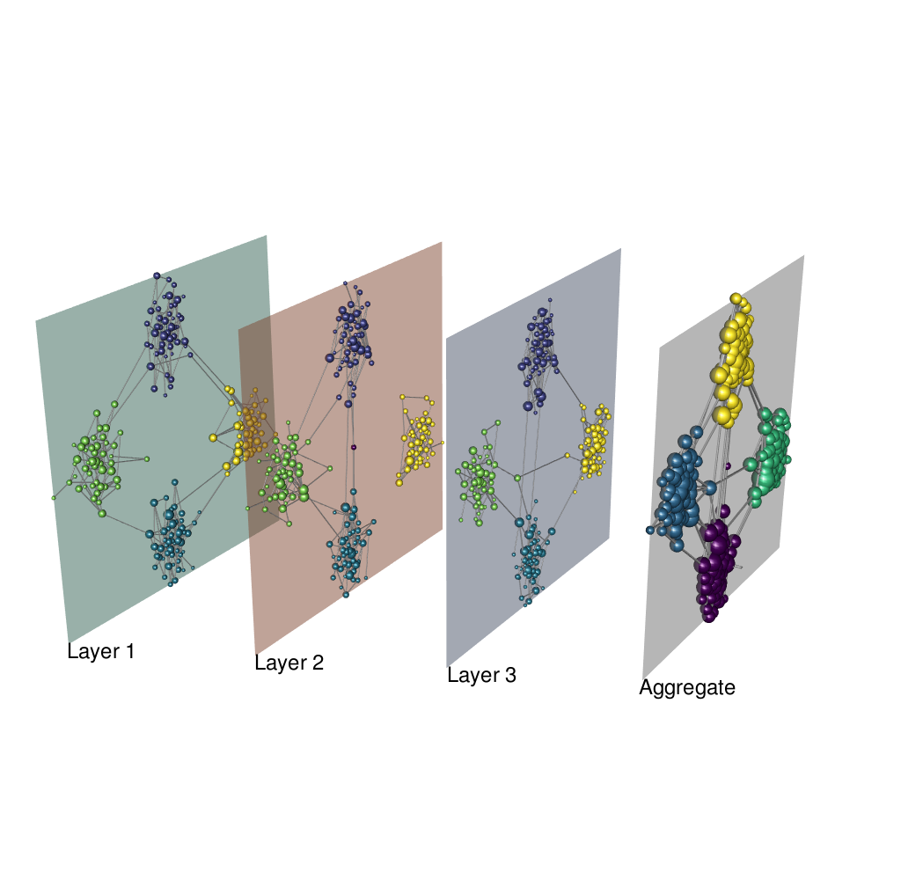
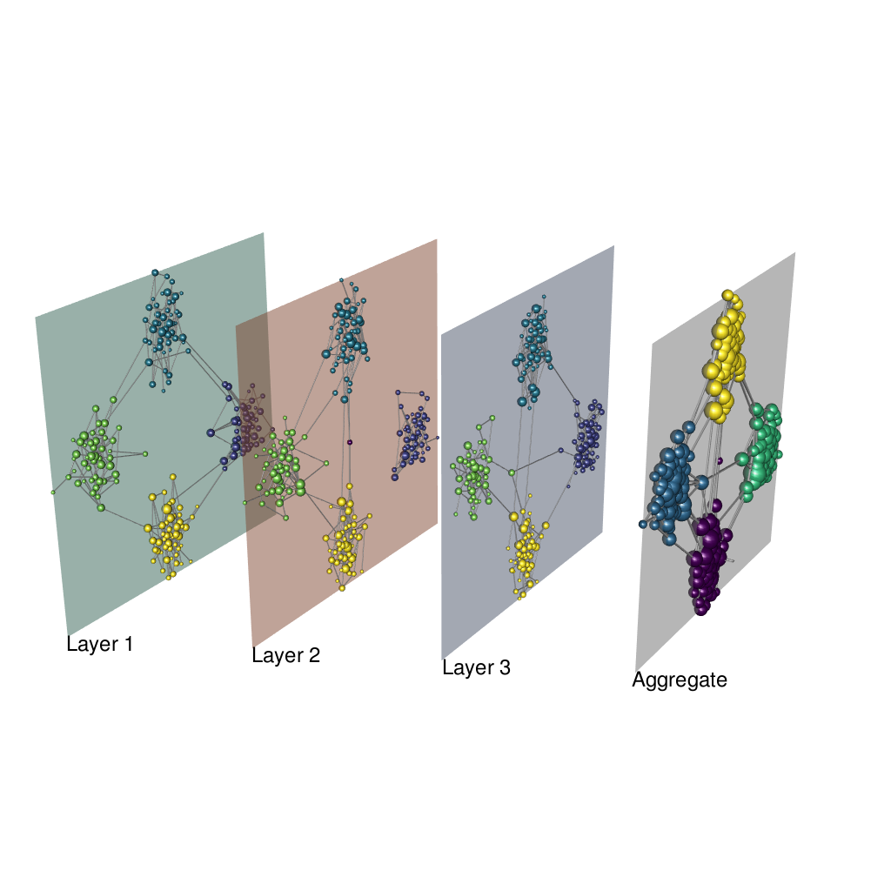

library(muxViz)
library(igraph)
#>
#> Attaching package: 'igraph'
#> The following objects are masked from 'package:stats':
#>
#> decompose, spectrum
#> The following object is masked from 'package:base':
#>
#> union
library(RColorBrewer)
library(viridis)
#> Loading required package: viridisLite
library(rgl)
set.seed(1)
# Network setup
Layers <- 3
Nodes <- 200
layerCouplingStrength <- 1
networkOfLayersType <- "categorical"
isDirected <- F
layer.colors <- brewer.pal(8, "Set2")Setup Infomap, see setup Infomap vignette
pathInfomap <- "../src/infomap-0.x/Infomap"Multiplex modules
Generate an edge-colored network and layers with 4 modules
nodeTensor <- list()
g.list <- list()
plantedGroupsPerLayer <- 4
# matrix of the stochastic block model
block.matrix <- matrix(0.1 / Nodes, plantedGroupsPerLayer,
plantedGroupsPerLayer)
diag(block.matrix) <- 2 * log(Nodes) / Nodes
block.sizes <- rep(floor(Nodes / plantedGroupsPerLayer), plantedGroupsPerLayer)
for (l in 1:Layers) {
#Generate the layers
g.list[[l]] <- sample_sbm(Nodes, pref.matrix=block.matrix,
block.sizes=block.sizes)
#Get the list of adjacency matrices which build the multiplex
nodeTensor[[l]] <- get.adjacency(g.list[[l]])
}Calculate a layout for consistent visualizations
lay <- layoutMultiplex(g.list, layout="fr", ggplot.format=F, box=T)
# Show the multiplex network
plot_multiplex3D(g.list, layer.layout=lay, layer.colors=layer.colors,
layer.shift.x=0.5, layer.space=2,
layer.labels="auto", layer.labels.cex=1.5,
node.size.values="auto", node.size.scale=0.8,
show.aggregate=T)
# save the plot:
rgl.snapshot("../man/figures/multi_sbm.png", fmt = "png") Find modules without imposing hard partitions
commResult <- GetMultiplexCommunities_Infomap(g.list,
bin.path=pathInfomap,
isDirected=isDirected,
seed=12345,
includeSelfLinks=F,
numTrials=100,
twoLevel=T,
preclusterMultiplex=F,
addMissingPhysicalNodes=F,
hardPartitions=F,
verbose=T,
addAggregateAnalysis=T,
multilayerRelaxRate=0.5,
multilayerJSRelaxRate=NA,
outputPrefix="multimap_example")
#> 1/2 Setting up the algorithms...
#> 2/2 Finding communities...
#> + Multiplex network...
#> Code length Multiplex: 5.79719
#> Communities Multiplex: 6
#> + Aggregate network...
#> Code length Aggregate: 6.46243949807797
#> Communities Aggregate: 4
#> Calculation Completed!Find modules by imposing hard partitions
commResult.hp <- GetMultiplexCommunities_Infomap(g.list,
bin.path=pathInfomap,
isDirected=isDirected,
seed=12345,
includeSelfLinks=F,
numTrials=100,
twoLevel=T,
preclusterMultiplex=F,
addMissingPhysicalNodes=F,
hardPartitions=T,
verbose=T,
addAggregateAnalysis=T,
multilayerRelaxRate=0.5,
multilayerJSRelaxRate=NA,
outputPrefix="multimap_example_hp")
#> 1/2 Setting up the algorithms...
#> 2/2 Finding communities...
#> + Multiplex network...
#> Code length Multiplex: 5.80244
#> Communities Multiplex: 5
#> + Aggregate network...
#> Code length Aggregate: 6.46243949807797
#> Communities Aggregate: 4
#> Calculation Completed!Finally, process the results:
- Multilayer: module size distribution (no hard partitions): 140, 139, 139, 128, 4, 2
- Multilayer: module size distribution (with hard partitions): 141, 139, 139, 132, 1
- Aggregate: module size distribution 50, 50, 50, 50
Compare the results without and with hard partitions.
Quantify difference between hard/non-hard partitions
VI <- igraph::compare(commResult$membership.multi$module, commResult.hp$membership.multi$module, method="vi")
NMI <- igraph::compare(commResult$membership.multi$module, commResult.hp$membership.multi$module, method="nmi")
ARI <- igraph::compare(commResult$membership.multi$module, commResult.hp$membership.multi$module, method="adjusted.rand")- Variation of Information: 0.0457542 bits
- Normalized Mutual Information: 0.9838563
- Adjusted Rand Index: 0.9884174
Plots
# make palettes according to identified modules
pal.mux <- sample(viridis(commResult$modules.multi))
pal.aggr <- sample(viridis(commResult$modules.aggr))
png("../man/figures/multi_sbm_infomap_table.png", width = 1024, height = 728 / 2,
res = 100)
gplt <- plot_multimodules(commResult, module.colors = pal.mux,
show.aggregate = T)
dev.off()
#> agg_png
#> 2
png("../man/figures/multi_sbm_infomap_hp_table.png", width = 1024,
height = 728 / 2, res = 100)
gplt.hp <- plot_multimodules(commResult.hp, module.colors = pal.mux,
show.aggregate = T)
dev.off()
#> agg_png
#> 2 

Case with inter-layer connections and no hard partitions
# coloring state nodes
node.colors.matrix <- matrix("#dadada", Nodes, Layers)
for (l in 1:Layers) {
dftmp <- commResult$membership.multi[commResult$membership.multi$layer==l,]
idxs <- dftmp$node
node.colors.matrix[idxs,l] <- pal.mux[dftmp$module]
}
# coloring physical nodes in the aggregate
node.colors.aggr <- rep("#dadada", Nodes)
node.colors.aggr[commResult$membership.aggr$node] <- pal.aggr[commResult$membership.aggr$module]
plot_multiplex3D(g.list, layer.layout=lay, layer.colors=layer.colors,
layer.shift.x=0.5, layer.space=2,
layer.labels="auto", layer.labels.cex=1.5,
node.size.values="auto", node.size.scale=0.8,
node.colors=node.colors.matrix, edge.colors="#dadada",
node.colors.aggr=node.colors.aggr,
show.aggregate=T)
rgl.snapshot("man/figures/multi_sbm_infomap.png", fmt = "png")
#> Warning in rgl.snapshot("man/figures/multi_sbm_infomap.png", fmt = "png"): RGL:
#> Pixmap save: unable to open file 'man/figures/multi_sbm_infomap.png' for writing
#> Warning in rgl.snapshot("man/figures/multi_sbm_infomap.png", fmt = "png"):
#> 'rgl.snapshot' failedCase with hard partitions
# coloring state nodes
node.colors.matrix <- matrix("#dadada", Nodes, Layers)
for (l in 1:Layers) {
dftmp <- commResult.hp$membership.multi[commResult.hp$membership.multi$layer==l,]
idxs <- dftmp$node
node.colors.matrix[idxs,l] <- pal.mux[dftmp$module]
}
# coloring physical nodes in the aggregate
node.colors.aggr <- rep("#dadada", Nodes)
node.colors.aggr[commResult.hp$membership.aggr$node] <- pal.aggr[commResult.hp$membership.aggr$module]
plot_multiplex3D(g.list, layer.layout=lay, layer.colors=layer.colors,
layer.shift.x=0.5, layer.space=2,
layer.labels="auto", layer.labels.cex=1.5,
node.size.values="auto", node.size.scale=0.8,
node.colors=node.colors.matrix, edge.colors="#dadada",
node.colors.aggr=node.colors.aggr,
show.aggregate=T)
rgl.snapshot("../man/figures/multi_sbm_infomap_hp.png", fmt="png")
Multilayer modules
# Define the network of layers
layerTensor <- BuildLayersTensor(Layers=Layers, OmegaParameter=layerCouplingStrength,
MultisliceType=networkOfLayersType)
layerLabels <- 1:Layers
# Build the multilayer adjacency tensor
M <- BuildSupraAdjacencyMatrixFromEdgeColoredMatrices(nodeTensor, layerTensor, Layers, Nodes)
commResult2 <-
GetMultilayerCommunities_Infomap(
SupraAdjacencyMatrix = M,
Layers = Layers,
Nodes = Nodes,
bin.path = pathInfomap,
isDirected = isDirected,
seed = 12345,
includeSelfLinks = F,
numTrials = 100,
twoLevel = T,
preclusterMultiplex = F,
addMissingPhysicalNodes = F,
hardPartitions = F,
verbose = T,
addAggregateAnalysis = T,
outputPrefix = "multimap_example2"
)
#> 1/2 Setting up the algorithms...
#> 2/2 Finding communities...
#> + Multiplex network...
#> Code length Multiplex: 5.79069
#> Communities Multiplex: 7
#> + Aggregate network...
#> Code length Aggregate: 6.46243949807797
#> Communities Aggregate: 4
#> Calculation Completed!Case with inter-layer connections and no hard partitions
# coloring state nodes
node.colors.matrix2 <- matrix("#dadada", Nodes, Layers)
for(l in 1:Layers){
dftmp <- commResult2$membership.multi[commResult2$membership.multi$layer==l,]
idxs <- dftmp$node
node.colors.matrix2[idxs,l] <- pal.mux[dftmp$module]
}
# coloring physical nodes in the aggregate
node.colors.aggr2 <- rep("#dadada", Nodes)
node.colors.aggr2[commResult2$membership.aggr$node] <- pal.aggr[commResult2$membership.aggr$module]
plot_multiplex3D(g.list, layer.layout=lay, layer.colors=layer.colors,
layer.shift.x=0.5, layer.space=2,
layer.labels="auto", layer.labels.cex=1.5,
node.size.values="auto", node.size.scale=0.8,
node.colors=node.colors.matrix2, edge.colors="#dadada",
node.colors.aggr=node.colors.aggr2,
show.aggregate=T)
rgl.snapshot("../man/figures/multi_sbm_infomap2.png", fmt="png")
Look at the size of all communities:
- Multilayer: module size distribution (no hard partitions) 150, 147, 150, 150, 1, 1, 1
- Aggregate: module size distribution 50, 50, 50, 50